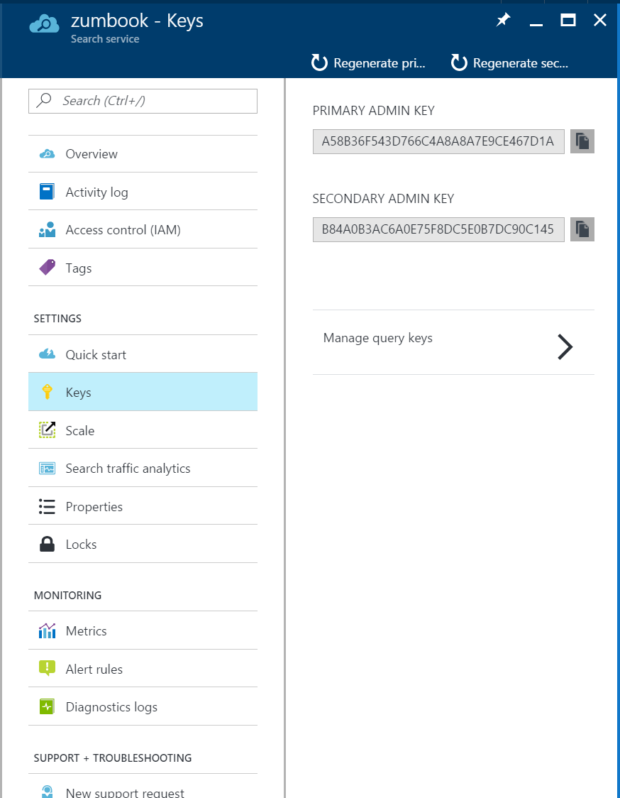
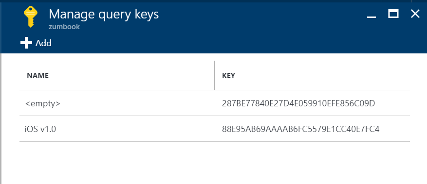

Integrating Mobile Search¶
Simple search capabilities can be handled by a little light LINQ usage and a small search bar. However, most catalog apps or video apps have search that seems almost magical in what it produces. It can handle multiple languages, bad spelling, the difference between singular and plural spellings. Once it has a set of matches, the order of the results is based on relevance to your search query and the app can highlight and provide additional search queries.
All of this is provided by external search services. The most commonly used services are based on Lucene which is an open-source text search engine library from the Apache Project. Azure Search is no exception here. It provides a nice REST interface that can be used by your app to provide search results.
In this chapters example, we are going to build something new and it doesn't use Azure Mobile Apps much at all. We are going to build a video search engine. We will have a number of videos that we will upload. Those videos will be processed by the backend and the audio and video content will be analyzed for searchable content. Our app will be able to search that content and get some matches back.
To start, I've created a simple Xamarin Forms app with a single view (called Search). We'll update this app later on as we develop the code. For now, the code for the app is on the GitHub repository.
Configuring Azure Search¶
My project does not depend on Azure Mobile Apps this time (yet). Create a new Resource Group, then click on the + ADD button at the top of your resource group and add a new Azure Search resource. You will have to give it a name which becomes a part of the URL. All Azure Search resources are accessed through a https://name.search.windows.net URL.
Tip
Since your users will not be typing the name in, this is a great time to use a GUID as the name - it fits the naming convention and is guaranteed to be unique.
The only other decision of note is the Pricing Tier. You will be given the Standard tier, which covers 15 million documents per partition and up to 12 partitions, with up to 36 search units for scaling. It's an awesome production service. We are not exactly at that level of need yet. Fortunately, there is a free tier that covers a single scale unit, 50MB of storage and 10,000 documents - plenty for testing the service out.

Click on the F Free option, then Select, followed by Create to create the resource. Creation of search resources is very quick - usually less than 15 seconds.
Creating a Search Index¶
Just like Azure Mobile Apps, there is no data in the service yet, so it's fairly useless. We need to create an index that can be searched. For right now, I've got a collection of videos. These documents are JSON objects that include the following fields:
- Id
- Title
- Image
- Rating
- Release Year
- Genre
In Azure Search, the model for the objects going into the store need to have a type and you need to decide on some attributes. Exactly one field must be a "key" (we'll use the Id for this), and fields need to be marked Retrievable, Filterable, Sortable, Facetable and/or Searchable.
- Retrievable - the app can retrieve the field
- Sortable - it can be used to sort search results
- Filterable - it can be used in filter queries
- Searchable - it is a full-text search field
The only one I've left out here is "Facet-able". This allows a field to be used in faceted navigation. This is a drill-down mechanism. If you have been on a web store like Amazon, you will have seen this feature. It's generally depicted as a "Refine by" field. For example, you may search for cars, but then want to limit the search to only convertibles, then only by red cars. Each of these refinements is a facet. If I added a "genre" to my fields, I could use faceted navigation.
Back to my model, here it is:
| Field Name | Type | Attributes |
|---|---|---|
| videoId | Edm.String | Key, Retrievable |
| title | Edm.String | Retrievable, Sortable, Filterable, Searchable |
| image | Edm.String | Retrievable |
| rating | Edm.Double | Retrievable, Sortable, Filterable |
| releaseYear | Edm.Int32 | Retrievable, Sortable, Filterable |
| genre | Collection(Edm.String) | Retrievable, Filterable, Searchable, Facetable |
The types are based on OData v4 types. There are a large number of primitive types. Unfortunately, Azure Search only supports a subset of these.
Warn
You can't sort by the genre field because it is a collection. Collections cannot be marked sortable.
You can create an index via the Azure Portal or with the REST interface. I'm going to define my "videos" index with JSON. Here is the JSON file:
{
"name": "videos",
"fields": [
{
"name": "videoId",
"type": "Edm.String",
"key": true,
"filterable": false,
"searchable": false,
"sortable": false,
"facetable": false
},
{
"name": "title",
"type": "Edm.String",
"filterable": true,
"sortable": true,
"facetable": false
},
{
"name": "image",
"type": "Edm.String",
"filterable": false,
"searchable": false,
"sortable": false,
"facetable": false
},
{
"name": "rating",
"type": "Edm.Double",
"filterable": true,
"searchable": false,
"sortable": true,
"facetable": false
},
{
"name": "releaseYear",
"type": "Edm.Int32",
"filterable": true,
"searchable": false,
"sortable": true,
"facetable": false
},
{
"name": "genre",
"type": "Collection(Edm.String)",
"filterable": true,
"sortable": false,
"facetable": true
}
]
}
Tip
You can skip default values. Searchable and Retrievable default to true, so you only have to specify them if you want to turn that off. Similarly, key defaults to false, so you only have to specify the key on the field that needs it.
To install this index, you will need the URI of the search service (which you already have) and the API Key.
In the Azure Portal, open your Azure Search resource and click on Keys. You will see the primary
and secondary ADMIN KEY. You can use either one. Open up Postman and issue a POST to URI/indexes?api-version=2016-09-01.
Set the Content-Type to application/json and add an api-key header set to the admin key. The content
of the POST should be your JSON object.
Info
You can also install an index through the Azure Portal as a one time activity. I like using REST because it allows me to treat "configuration as code" and check my index definition into my source repository. This also opens up automated deployment options via PowerShell, for example.

Click on the SEND button and you will see the return status of 201 Created and an OData v4 document
in the response body giving the full definition of the index. You will receive a 400 series response with
an error message if something goes wrong. It's likely to be either a duplicate index or a malformed JSON
object.
Free Limits
You can create 1 free Azure Search instance and that supports 3 indices (or collections of documents).
Populating a Search Index (the easy way)¶
There are many ways of populating a search index. You can do what we are going to do - push data into an index. You can, however, also define an indexer that will crawl a data source periodically. Indexers are provided for Azure Blob and Table Storage, DocumentDB and SQL Server instances (through Azure SQL or SQL Server on a VM).
I'm going to use a file from the Internet to populate the search index. I had to adjust it as the format for uploading is specific:
{
"value": [
{
"title": "Dawn of the Planet of the Apes",
"image": "http://api.androidhive.info/json/movies/1.jpg",
"rating": 8.3,
"releaseYear": 2014,
"genre": [
"Action",
"Drama",
"Sci-Fi"
],
"@search.action": "upload",
"videoId": "98ebe557-894c-48de-b61c-718f78b2adbb"
},
{
"title": "District 9",
"image": "http://api.androidhive.info/json/movies/2.jpg",
"rating": 8,
"releaseYear": 2009,
"genre": [
"Action",
"Sci-Fi",
"Thriller"
],
"@search.action": "upload",
"videoId": "e9d89038-386b-4aaa-a36c-530e2f3587c9"
},
...
]
}
I can upload this document just like the creation of the index. The only difference is that I am POSTing to /indexes/videos/docs/index:

If you see a 200 OK, then all the documents were uploaded and accepted. If you see a 207 message, then some of the documents were not uploaded. In that case, look at the response - each document will be referenced by the key field (in our case, the videoId field), the status field will be false and there will be an errorMessage field which contains the problem. You can correct the problem and upload just that document.
There are four values for the @search.action field - normally, we will want to use "upload" for new documents and "mergeOrUpload" for subsequent updates.
Testing Azure Search¶
Now that we have a few documents indexed, we can test the search facility. Go to the Overview page of your search service. The indices are listed on the overview page and you can click on the videos index.

You can then click on the Search Explorer to get into the test facility. Let's start with a fairly basic search for the word "of" across all searchable fields:

We can also do boolean searches. For example, let's do the same search, but finding only comedies:

Azure Search can accept a simple search string (as we have done here), an OData Filter using a restricted set of search criteria, or Lucene Search Syntax. The search explorer allows you to explore the various search mechanisms and their (sometimes peculiar) syntax.
Other Service Considerations¶
You will note the use of an API key for Azure Search. This can (and should) be regenerated at a regular
interval. As a result, you will want a custom API that retrieves the current API key, perhaps only giving
the API key to authenticated users. We covered custom APIs in an earlier chapter, so I won't cover that
functionality here. Instead, the demonstration code will use a Settings.cs class in the client that
contains the URI and API key for searching.
Using Azure Search¶
Before you can use Azure Search, you should generate a Query-Only API key for your Azure Search service. When we uploaded the documents to the search service for indexing (and if you intend to do any other administrative tasks through PowerShell or the REST API), you will use the Administrative API key. This key is found under the Keys menu item in the Azure Search resource in the Azure Portal. In the same place is a menu item called Manage query keys.

The service creates one of these keys for you with an empty name. I like to create a query key for each version of the mobile software I release. I can thus retire keys that are no longer in use. To create a key:
- Click the + Add button.
- Enter a descriptive name (like "iOS v1.0", for example)
- Click Create.

You can now copy and paste the key into your settings file. I have created a Settings.cs file in my shared
project:
using System;
namespace VideoSearch
{
public static class Settings
{
public static string AzureSearchUri = "https://zumbook.search.windows.net";
/// <summary>
/// Replace this with your API key from the Azure Search. You should
/// never check in code with an API key in it - read the key from an
/// Azure App Service App Setting and then provide it to your mobile
/// clients via a custom API.
/// </summary>
public static string AzureSearchApiKey = "88E95AB69AAAAB6FC5579E1CC40E7FC4";
}
}
As we saw while we were testing the service, the search API is going to return a number of JSON objects. We
can represent each return value with a model. Here is my Models/Movie.cs model:
using System;
using System.Collections.Generic;
using Newtonsoft.Json;
namespace VideoSearch.Models
{
public class Movie : SearchResult
{
[JsonProperty(PropertyName = "videoId")]
public string Id { get; set; }
public string Title { get; set; }
public Uri Image { get; set; }
public double Rating { get; set; }
public int ReleaseYear { get; set; }
[JsonProperty(PropertyName = "genre")]
public List<string> Genres { get; set; }
}
}
The Models/SearchResult.cs model adds the @search.score value that is returned in the search results:
using Newtonsoft.Json;
namespace VideoSearch.Models
{
public class SearchResult
{
[JsonProperty(PropertyName = "@search.score")]
public double SearchScore { get; set; }
}
}
Finally, the Models/MovieResults.cs class can be used to deserialize the entire JSON object that is returned by the
server:
using System.Collections.Generic;
using Newtonsoft.Json;
namespace VideoSearch.Models
{
public class MovieResults
{
[JsonProperty(PropertyName = "@odata.context")]
public string Context { get; set; }
[JsonProperty(PropertyName = "value")]
public List<Movie> Movies { get; set; }
}
}
I also provide a class called Services/SearchService.cs for handling search results. In this case, it will
do the HTTP request to the specified server, sending the provided search string, and decode the response. It
will throw an exception if the server produces an error:
using System;
using System.Collections.Generic;
using System.Net.Http;
using System.Net.Http.Headers;
using System.Threading.Tasks;
using Newtonsoft.Json;
using VideoSearch.Models;
namespace VideoSearch.Services
{
public class SearchService
{
private HttpClient _client;
private string _apiVersion = "2016-09-01";
public SearchService()
{
this._client = new HttpClient();
}
public async Task<List<Movie>> SearchMoviesAsync(string searchTerms)
{
var content = await SearchAsync("videos", searchTerms);
var movieResults = JsonConvert.DeserializeObject<MovieResults>(content);
return movieResults.Movies;
}
private async Task<string> SearchAsync(string index, string searchTerms)
{
var uri = new UriBuilder($"{Settings.AzureSearchUri}/indexes/{index}/docs");
uri.Query = $"api-version={_apiVersion}&search={Uri.EscapeDataString(searchTerms)}";
var request = new HttpRequestMessage
{
RequestUri = uri.Uri,
Method = HttpMethod.Get
};
request.Headers.Accept.Add(new MediaTypeWithQualityHeaderValue("application/json"));
request.Headers.Add("api-key", Settings.AzureSearchApiKey);
var response = await _client.SendAsync(request);
return await response.Content.ReadAsStringAsync();
}
}
}
The SearchAsync() method is a basic HTTP GET method that returns a string. We add the appropriate
headers and ensure the URI is the correct format.
This service class can now be used to search for movies when we type something into the search box and
initiate a search. This is done in the ViewModels\Search.cs class in the shared project:
public Command SearchCommand => _cmdSearch ?? (_cmdSearch = new Command(async () => await ExecuteSearchCommand()));
private async Task ExecuteSearchCommand()
{
if (IsBusy)
return;
IsBusy = true;
try
{
var results = await _service.SearchMoviesAsync(SearchString);
SearchResults.ReplaceRange(results);
}
catch (Exception ex)
{
SearchResults.Clear();
await Application.Current.MainPage.DisplayAlert("Search Failed", ex.Message, "OK");
}
finally
{
IsBusy = false;
}
}
The SearchString is a bindable string property that is bound to the Text field of the search
bar. The SearchResults property is an ObservableRangeCollection that is bound to a list of
items.
This code creates a reference to our search service, then uses it to populate the search results PropertyName with the list of movies when the search is complete. We also needed a little bit of error handling for the edge case when the user types something in that isn't understood by the search service. This is likely to be rare, but we want to handle failures gracefully when they do happen.
The associated view must also be adjusted so that the movies are displayed. This is done within a ListView
object in a similar way to the way we did our task list examples:
<ListView
CachingStrategy="RecycleElement"
IsPullToRefreshEnabled="False"
ItemsSource="{Binding SearchResults}"
RowHeight="50"
SelectedItem="{Binding SelectedItem, Mode=TwoWay}">
<ListView.BackgroundColor>
<OnPlatform
x:TypeArguments="Color"
Android="#2E2F30"
WinPhone="#F0F0F0"
iOS="#F0F0F0" />
</ListView.BackgroundColor>
<ListView.ItemTemplate>
<DataTemplate>
<ViewCell>
<StackLayout
Padding="10"
HorizontalOptions="FillAndExpand"
Orientation="Horizontal"
VerticalOptions="CenterAndExpand">
<StackLayout.BackgroundColor>
<OnPlatform
x:TypeArguments="Color"
Android="Black"
WinPhone="White"
iOS="White" />
</StackLayout.BackgroundColor>
<Label
HorizontalOptions="FillAndExpand"
Text="{Binding Title}"
TextColor="#272832">
<Label.TextColor>
<OnPlatform
x:TypeArguments="Color"
Android="#F3F3F3"
WinPhone="#272832"
iOS="#272832" />
</Label.TextColor>
</Label>
</StackLayout>
</ViewCell>
</DataTemplate>
</ListView.ItemTemplate>
</ListView>
We can now run this application and start using the search service! In the example code, I've also included a Details panel. This should show you all the information within a movie title from the search results by clicking on the movie title. It's similar in construction to the task details pane from our task list example.
SQL vs. DocumentDB vs. Azure Search¶
You may be wondering at this point why you should use Azure Search as an addition to SQL databases or DocumentDB. After all, all three options store data, allow you to update that data, and provide access to JSON documents. So why would I not just place all my data in a searchable index and use that instead?
The Azure Search facility is designed for full-text searching of data, not rapid updates from multiple sources. As a result of this focus, it has no ability to do offline synchronization or conflict resolution, and it is lazy about inserts (data inserted may not be available straight away). It is not a good repository if your common practice is to work with the full data set and it is most definitely not the right source if you have more than one client with the potential to update records at the same time. It's primarily driven by a need to provide fast search results.
DocumentDB and SQL Azure (via Azure Mobile Apps) are are the inverse of this. They are designed for concurrent and rapid updates to the data, with built-in conflict handling, incremental offline sync and guaranteed atomic writes. These are features that your mobile clients need when you are writing data. Both DocumentDB and Azure Mobile Apps also have security features for limiting data retrieval - something Azure Search does not have.
Use Azure Search when you want to do "shopping cart" or "reference data search" type functionality. These use cases have slow changing data sets that are changed behind the scenes by a single client. Use Azure Mobile Apps or DocumentDB when you want multiple clients to update the data set, or your mobile client updates have security concerns.